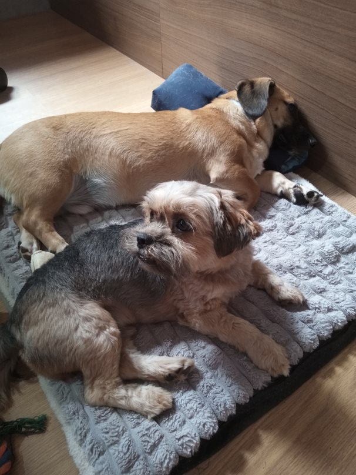
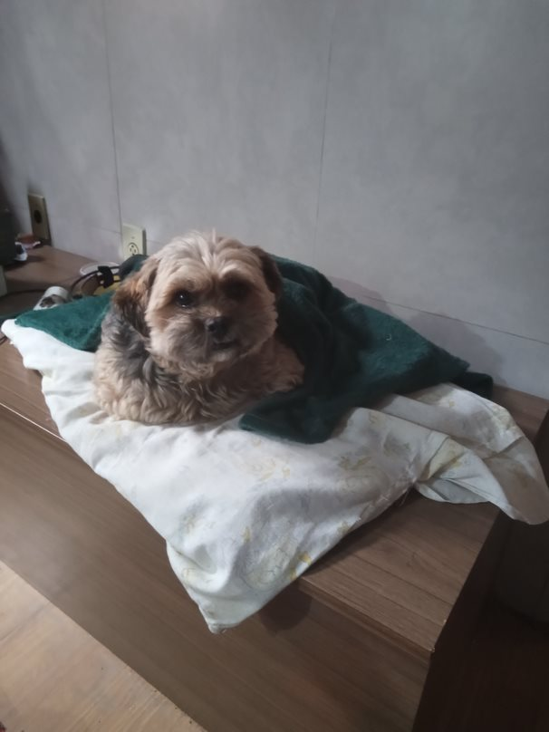
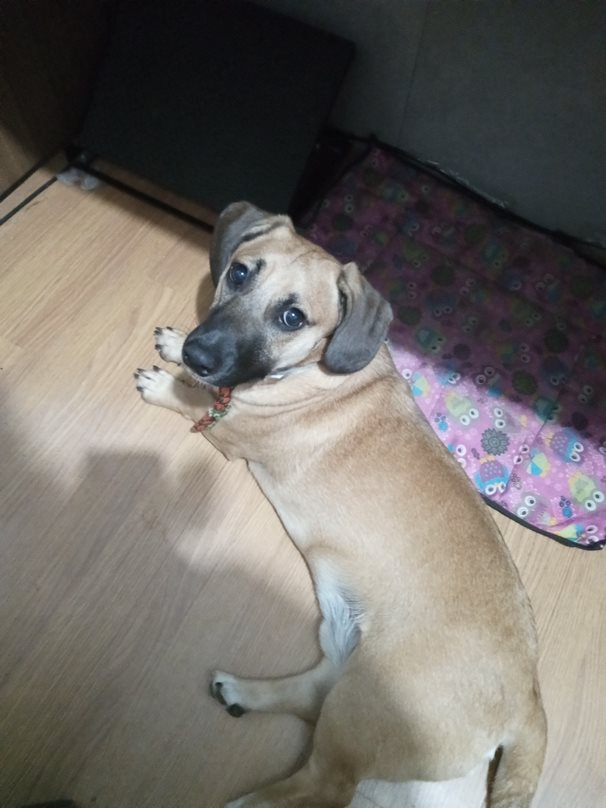

Portfólio Pessoal (CV Online)
Sobre Mim
Olá! Meu nome é Larissa Ferreira de Jesus, tenho 38 anos e moro com meu marido, Marco Henrique, em Gravataí, RS.
Meus Cachorros
- Lucy: uma adorável senhora de 17 anos.
- Tibério: resgatado ainda filhote pelo projeto AUmaMIA e adotado por mim aos 6 meses. Hoje ele tem 2 anos.
- Cascão: encontrado, ano passado, nas ruas do bairro em condições difíceis e adotado com uma idade estimada de 4 anos.
Meus Hobbies
No meu tempo livre, adoro passear com meus cães, jogar online e assistir a séries. Também faço aulas de boxe com meu namorado e sou fã do universo da dança de salão, embora tenha tido menos tempo para praticar desde que iniciei minha trajetória na área de TI.
Minhas Paixões
Sou apaixonada por café: coleciono canecas e amo explorar cafeterias. Além disso, gosto de ir a restaurantes e experimentar comidas diferentes.
Obrigada por tirar um tempo para conhecer um pouco mais sobre mim! 😊
Larissa Ferreira de Jesus

Cascão e Tibério

Cascão

Tibério
 Lucy
Lucy